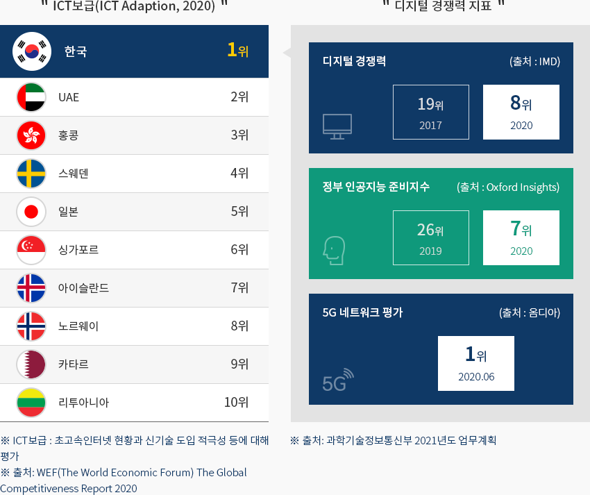
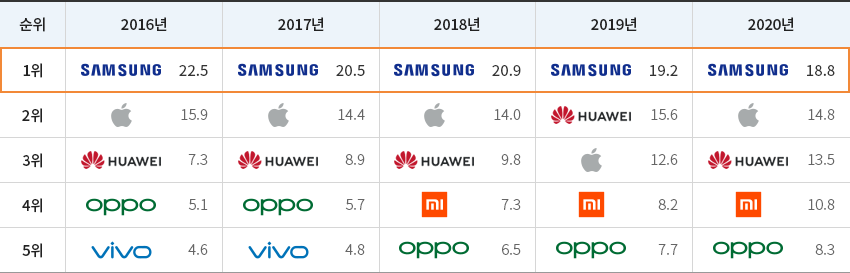
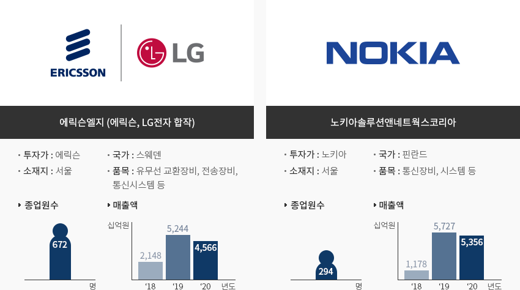
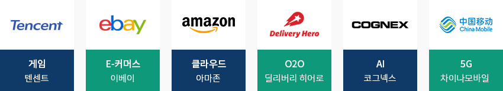
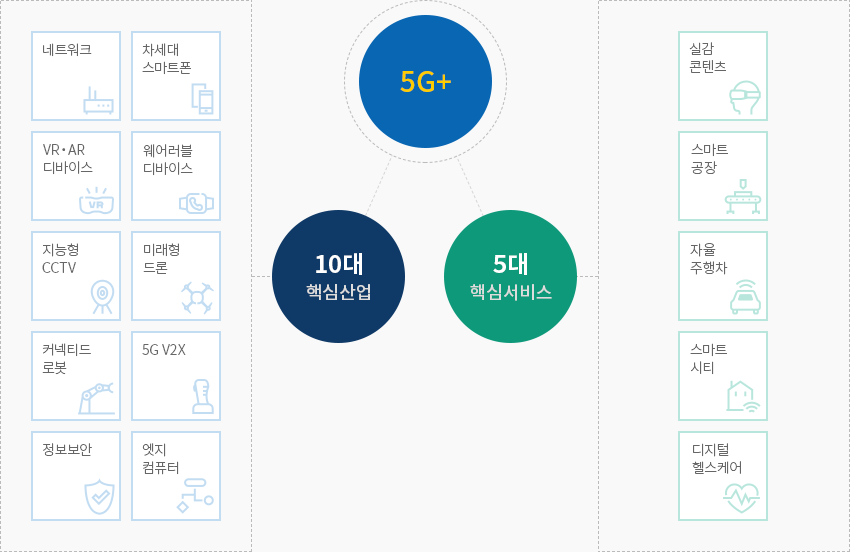
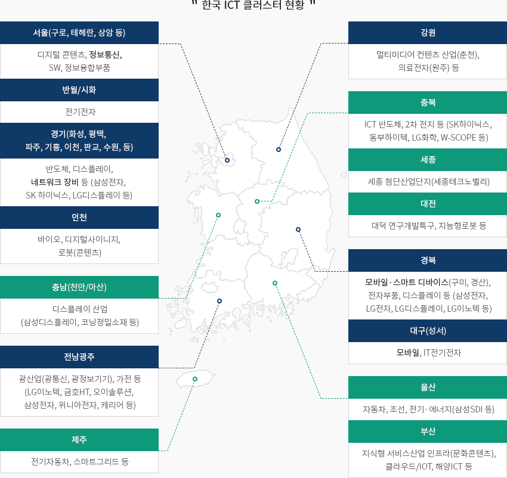

정보통신(ICT)
- Home
- Why KOREA
- 산업
- 정보통신(ICT)
정보통신(ICT)
Information & Communications Technology
-
세계 최초, 그리고 세계 최고의 IT 강국 내용닫기세계 최초, 그리고 세계 최고의 IT 강국한국은 ICT 산업의 글로벌 리더이다.
세계최초로 CDMA(1996년), LTE-A(2013년), 5G(2019년)를 상용화하였으며,
높은 ICT 기술 수준과 보급률을 바탕으로 한국은 ICT 부분의 글로벌 리더로 평가받고 있다."ICT보급(ICT Adaption, 2019)"- 1위:한국-광케이블 인터넷 가입자 수 1위, 초고속 인터넷 가입자 수 6위, 인터넷 사용자 수 9위, 이동통신 사용자 수 21위, 이동전화 가입자 수 44위
- 2위:UAE
- 3위:홍콩
- 5위:싱가포르
- 6위:일본
- 9위:덴마크
- 18위:중국
- 27위:미국
- 31위:영국
- 35위:캐나다
 ※ 출처 : WEF(World Economic Forum), 국가경쟁력보고서 2019또한 한국 제조사의 스마트폰 판매량은 2011년 이래 세계 1위를 유지하고 있으며,
※ 출처 : WEF(World Economic Forum), 국가경쟁력보고서 2019또한 한국 제조사의 스마트폰 판매량은 2011년 이래 세계 1위를 유지하고 있으며,
5G, 폴더블 등 신기술을 적용한 프리미엄 스마트폰으로 세계 혁신을 선도하고 있다."세계 스마트폰 시장의 상위 5위 업체 시장점유율 추이"(단위 : %)세계 스마트폰 시장의 상위 5위 업체 시장점유율 표로 순위, 2015년, 2016년, 2017년, 2018년, 2019년 정보제공 순위 2015 2016 2017 2018 2019 1 삼성 22.5% 삼성 20.5% 삼성 20.9% 삼성 19.0% 삼성 19.2% 2 애플 15.9% 애플 14.4% 애플 14.0% 애플 13.4% 화웨이 15.6% 3 화웨이 7.3% 화웨이 8.9% 화웨이 9.8% 화웨이 13.0% 애플 12.6% 4 레노버 5.1% 오포 일렉트로닉스 5.7% 오포 일렉트로닉스 7.3% 샤오미 7.9% 샤오미 8.2% 5 샤오미 4.6% vivo 4.8% vivo 6.5% 오포 일렉트로닉스 7.6% 오포 일렉트로닉스 7.1%
※ 출처 : Gartner
※ 주 : 판매량 기준 -
국가경제를 주도하는 주력 산업 내용열기국가경제를 주도하는 주력 산업2019년 기준, GDP에서 ICT 산업이 차지하는 비중은 10.8%(1,711억 달러)로 한국 경제성장을 견인하고 있다.
특히 휴대폰은 한국의 10대 수출 품목 중 하나로, 2019년 한국 전체 수출의 약 2.3%를 차지했으며,
5G 상용화로 통신서비스 산업의 매출은 증가세를 이어가고 있다.※ 출처 : 과학기술정보통신부계
※ 국가통계포털(KOSIS) : [ICT 수출입통계] 상세 통계표 [바로가기] -
한국 진출 글로벌 기업의 5G 사업 강화 내용열기한국 진출 글로벌 기업의 5G 사업 강화한국에 진출한 글로벌 ICT 기업은 최근 5G 관련 사업을 확대하고 있다.한국 투자를 통해 2G부터 통신시장을 주도한 스웨덴 기업 에릭슨은 최근 한국 이동통신사와 공동으로
5G R&D 투자를 강화하고 있다. 핀란드 기업 노키아는 한국에서의 다양한 경험을 바탕으로 해외 네트워크
품질·성능 개선을 지원하고 있으며, 5G 등 차세대 네트워크 인프라 가상화 및 솔루션을 제공한다.에릭슨엘지- 투자가 : 에릭슨
- 국가 : 스웨덴
- 종업원수 : 668 (‘19.12월 기준)
- 매출액
- ’17년 : 2.4억 달러
- ’18년 : 2.0억 달러
- ‘19년 : 4.5억 달러
노키아솔루션앤네트웍스코리아- 투자가 : 노키아
- 국가 : 핀란드
- 종업원수 : 274(‘19.12월 기준)
- 매출액
- ’17년 : 1.7억 달러
- ’18년 : 1.1억 달러
- ’19년 : 4.9억 달러
또한 각종 글로벌 기업의 5G, AI, 클라우드, e커머스, O2O, 게임 관련 투자가 이루어지고 있으며,
향후 4차 산업혁명과 관련된 투자는 지속 증가할 것으로 전망된다.
-
5G+ 전략과 디지털 뉴딜 내용열기5G+ 전략과 디지털 뉴딜2019년 4월 한국 정부는 5G 조기 상용화 및 5G 기반 신산업 육성을 위해 “5G플러스(5G+)” 전략을 공표하였다.
5G 기반 10대 핵심산업과 5대 핵심서비스에 중점투자를 통해 5G+ 기반 신산업을 육성하고,
2026년까지 세계 시장의 15%를 점유하는 것을 목표로 하며, 정부 및 공공분야에서
선도적으로 5G를 도입하여 민관협력 체계를 구축한다."5G+ 전략의 10대 핵심산업 및 5대 핵심 서비스"5G- 10대 핵심산업
- 네트워크
- 차세대 스마트폰
- VR·AR 디바이스
- 웨어러블 디바이스
- 지능형 CCTV
- (미래형) 드론
- (커넥티드) 로봇
- 5G V2X
- 정보보안
- 엣지컴퓨팅
- 5대 핵심서비스
- 실감콘텐츠
- 스마트공장
- 자율주행차
- 스마트시티
- 디지털 헬스케어
2020년 7월 한국 정부는 ＂한국판 뉴딜 정책＂을 공표하였으며, 추후 D.N.A(Data, Network, AI) 생태계에
집중 투자하고자 한다. 5G 전국망 구축 지원, AI 융합프로젝트 추진 등을 통해 전 산업의 데이터,
5G, AI 활용 및 융합을 가속화 하는 것이 그 목표이다."디지털뉴딜 5G 관련 정책"디지털뉴딜 5G 관련 정책 표로 과제, 주요투자사업, 총사업비(‘20추~’22, ‘20추~’25), 일자리(‘20추~’25) 정보제공 과제 주요 투자 사업 총사업비(억 달러) 일자리(만개) ‘20추~’22 ‘20추~’25 ‘20추~’25 데이터 댐 - 분야별 데이터 확충·연계·활용
-
5G·AI 융합서비스 글로벌 선도
- 5G망 조기구축을 위한 등록면허세 감면, 투자세액 공제 등
- 실감기술을 적용한 디지털콘텐츠 및 자율차 주행기술 등 5G 융합서비스 개발
73.1 155.6 38.9 지능형 정부 - 페이퍼리스 정부서비스, 스마트 오피스 구현
-
5G·AI 융합서비스 글로벌 선도
- 정부청사 5G 국가망 구축 및 공공정보시스템의 민간·공공 클라우드센터 이전·전환
21.5 83.4 9.1 스마트 의료 인프라 - 5G, IoT 등 디지털 기반 스마트 의료 인프라 확충으로 비대면 의료서비스 기반 구축
0.9 1.7 0.2 - 10대 핵심산업
-
수도권, 대구∙경북권 통신기기 제조업 발달 내용열기수도권, 대구∙경북권 통신기기 제조업 발달통신기기 산업 중 스마트폰은 수도권, 대구∙경북권을 중심으로, 네트워크 장비는
수도권을 중심으로 클러스터가 형성되어 있다.- 서울(구로, 테헤란, 상암 등): 디지털 콘텐츠, 정보통신
- 경기(화성, 평택, 파주, 기흥, 이천, 판교, 수원, 안산 등): 반도체, 디스플레이, 전기전자, 네트워크 장비 등(삼성전자, LG전자, SK 하이닉스 등)
- 인천: 바이오, 디지털사이니지, 로봇(콘텐츠), 정보융합부품
- 강원:멀티미디어 컨텐츠 산업(춘천), 의료전자(원주) 등
- 충남(천안/아산): 디스플레이 산업(삼성디스플레이, 코닝정밀소재 등)
- 충북: ICT 반도체, 2차 전지 등 (SK하이닉스, DB하이텍, LG화학 등)
- 세종: 세종 첨단산업단지(세종테크노벨리)
- 대전: 대덕 연구개발특구, 지능형로봇 등
- 전남광주: 광산업(광통신, 광정보기기), 가전 등(LG이노텍, 금호HT, 오이솔루션, 삼성전자, 위니아전자, 캐리어 등)
- 경북: 모바일·스마트 디바이스(구미, 경산), 전자부품, 디스플레이 등 (삼성전자, LG전자, LG디스플레이, LG이노텍 등)
- 대구(성서): 모바일, IT전기전자
- 울산: 자동차, 조선, 전기·에너지(삼성SDI 등)
- 부산: 지식형 서비스산업 인프라(문화콘텐츠), 클라우드/IOT, 해양ICT 등
- 제주: 전기자동차, 스마트그리드 등
※ 자료협조 : 한국전자정보통신산업진흥회


Invest KOREA담당자
입지정보 추천
산업단지 정보
[경기도 안양시] 안양평촌스마트스퀘어도시첨단산업단지
세부정보 바로가기를 클릭하시면 산업단지공단의 Smart K-Factory 서비스의 해당 정보 화면으로 이동합니다.
-
단지명안양평촌스마트스퀘어도시첨단산업단지
-
최초지정일2012.04.03
-
지정면적(km2)255,065
-
관리기관경기도 안양시
-
인근철도역광명역
-
역과 거리(km)9
-
인근공항김포국제공항
-
공항과의 거리(km)27
-
공업용수 공급용량(톤/일)1251(㎥/일)
-
가정용수 공급용량(톤/일)-
-
소속 기초 지자체경기도 안양시
-
인구수(명)554,857
산업단지 정보
[부산광역시 해운대구] 회동·석대도시첨단산업단지
세부정보 바로가기를 클릭하시면 산업단지공단의 Smart K-Factory 서비스의 해당 정보 화면으로 이동합니다.
-
단지명회동·석대도시첨단산업단지
-
최초지정일2008.08.27
-
지정면적(km2)228,604
-
관리기관부산광역시 해운대구
-
인근철도역부전역
-
역과 거리(km)12
-
인근공항김해국제공항
-
공항과의 거리(km)33
-
공업용수 공급용량(톤/일)2939(㎥/일)
-
가정용수 공급용량(톤/일)-
-
소속 기초 지자체부산광역시 해운대구
-
인구수(명)403,118
산업단지 정보
[대전광역시 유성구] 대덕연구개발(제2지구)[구:대덕테크노밸리]
세부정보 바로가기를 클릭하시면 산업단지공단의 Smart K-Factory 서비스의 해당 정보 화면으로 이동합니다.
-
단지명대덕연구개발(제2지구)[구:대덕테크노밸리]
-
최초지정일1991.12.05
-
지정면적(km2)4,270,056
-
관리기관연구개발특구진흥재단
-
인근철도역대전역
-
역과 거리(km)13
-
인근공항청주국제공항
-
공항과의 거리(km)44
-
공업용수 공급용량(톤/일)130000(㎥/일)
-
가정용수 공급용량(톤/일)-
-
소속 기초 지자체대전광역시 유성구
-
인구수(명)1,469,431
산업단지 정보
[전라북도 정읍시] 정읍첨단과학(RFT)일반산업단지
세부정보 바로가기를 클릭하시면 산업단지공단의 Smart K-Factory 서비스의 해당 정보 화면으로 이동합니다.
-
단지명정읍첨단과학(RFT)일반산업단지
-
최초지정일2007.06.29
-
지정면적(km2)896,321
-
관리기관연구개발특구진흥재단
-
인근철도역천원역
-
역과 거리(km)6
-
인근공항광주공항
-
공항과의 거리(km)51
-
공업용수 공급용량(톤/일)4,720(㎥/일)
-
가정용수 공급용량(톤/일)-
-
소속 기초 지자체전라북도 정읍시
-
인구수(명)109,167
산업단지 정보
[대구광역시 달성군] 대구테크노폴리스일반산업단지(대구경북경제자유구역)
세부정보 바로가기를 클릭하시면 산업단지공단의 Smart K-Factory 서비스의 해당 정보 화면으로 이동합니다.
-
단지명대구테크노폴리스일반산업단지(대구경북경제자유구역)
-
최초지정일2006.12.29
-
지정면적(km2)7,259,403
-
관리기관연구개발특구진흥재단
-
인근철도역동대구역
-
역과 거리(km)4
-
인근공항대구국제공항
-
공항과의 거리(km)5
-
공업용수 공급용량(톤/일)8508(㎥/일)
-
가정용수 공급용량(톤/일)-
-
소속 기초 지자체대구광역시 달성군
-
인구수(명)258,234
산업단지 정보
[제주특별자치도 제주시] 제주첨단과학기술단지
세부정보 바로가기를 클릭하시면 산업단지공단의 Smart K-Factory 서비스의 해당 정보 화면으로 이동합니다.
-
단지명제주첨단과학기술단지
-
최초지정일2004.10.23
-
지정면적(km2)1,098,878
-
관리기관제주국제자유도시개발센터
-
인근철도역-
-
역과 거리(km)-
-
인근공항제주공항
-
공항과의 거리(km)14
-
공업용수 공급용량(톤/일)1025(㎥/일)
-
가정용수 공급용량(톤/일)-
-
소속 기초 지자체제주특별자치도 제주시
-
인구수(명)672,524